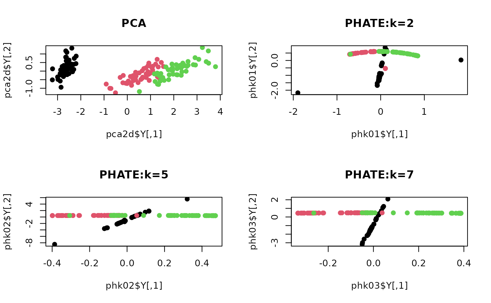

R/v_nonlinear_PHATE.R
nonlinear_PHATE.RdPHATE is a nonlinear method that is specifically targeted at visualizing high-dimensional data by embedding it on 2- or 3-dimensional space. We offer a native implementation of PHATE solely in R/C++ without interface to python module.
do.phate(
X,
ndim = 2,
k = 5,
alpha = 10,
dtype = c("sqrt", "log"),
smacof = TRUE,
...
)an \((n\times p)\) matrix or data frame whose rows are observations and columns represent independent variables.
an integer-valued target dimension (default: 2).
size of nearest neighborhood (default: 5).
decay parameter for Gaussian kernel exponent (default: 10).
type of potential distance transformation; "log" or "sqrt" (default: "sqrt").
a logical; TRUE to use SMACOF for Metric MDS or FALSE to use Classical MDS (default: TRUE).
extra parameters including
maximum number of iterations (default: 100).
absolute stopping criterion for metric MDS iterations (default: 1e-8).
a named Rdimtools S3 object containing
an \((n\times ndim)\) matrix whose rows are embedded observations.
name of the algorithm.
Moon KR, van Dijk D, Wang Z, Gigante S, Burkhardt DB, Chen WS, Yim K, van den Elzen A, Hirn MJ, Coifman RR, Ivanova NB, Wolf G, Krishnaswamy S (2019). “Visualizing Structure and Transitions in High-Dimensional Biological Data.” Nature Biotechnology, 37(12), 1482--1492. ISSN 1087-0156, 1546-1696.
# \donttest{
## load iris data
data(iris)
X = as.matrix(iris[,1:4])
lab = as.factor(iris[,5])
## compare different neighborhood sizes.
pca2d <- do.pca(X, ndim=2)
phk01 <- do.phate(X, ndim=2, k=2)
phk02 <- do.phate(X, ndim=2, k=5)
phk03 <- do.phate(X, ndim=2, k=7)
## Visualize
opar <- par(no.readonly=TRUE)
par(mfrow=c(2,2))
plot(pca2d$Y, col=lab, pch=19, main="PCA")
plot(phk01$Y, col=lab, pch=19, main="PHATE:k=2")
plot(phk02$Y, col=lab, pch=19, main="PHATE:k=5")
plot(phk03$Y, col=lab, pch=19, main="PHATE:k=7")

par(opar)
# }